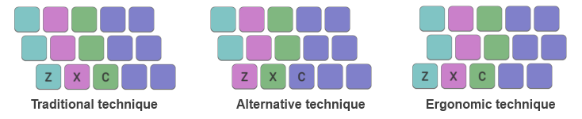

Colemak Mod-DH
A Colemak mod for more comfortable typing.
Layout Analyzer Tool
This is a tool for analyzing keyboard layouts, according to the two factors described in the layout comparison page. Importantly, you can modify the input values - the effort weights of the keys and the penalties for same-finger bigrams - to whatever you think they should be!
To use, select a layout from the list provided or type in your own (the format is 3 rows of ten characters, space-separated) into the top-left panel. Enter key effort values in the top-right panel, and also three penalty values for same-finger bigrams. See the layout comparison page for more explanation of the parameters.
Three possible configurations for the left hand are available. The chosen configuration will affect which finger presses each of the keys on the left-hand bottom row, and will also affect the key-effort scoring. To see the results click the "Analyze" button - results will shown according to the pre-calculated letter¹ and bigram frequency stats.

Possible key-finger configurations for the left hand. Keys indicated with the same colour should be typed with the same finger. The "Ergonomic" technique (using the Angle Mod) is the recommended configuration.
Results shown by finger refer to: left-hand (0-4) and right-hand (5-9). Fingers 0/9 are pinkies, 1/8 are ring, 2/7 are middle, 3/6 are; index, and 4/5 (not included in stats) are thumbs.

Notes
¹ Statistics are generated using a corpus which comprises a variety of books from Project Guttenberg, the same as used by carpalx.